Shakshat Virtual Lab 
INDIAN INSTITUTE OF TECHNOLOGY GUWAHATI
Exp-5 Analysis of LTI system response


Properties of Auto-correlation
-- ♦ -- ♦ -- ♦ -- ♦ -- ♦ -- ♦ -- ♦ -- ♦ -- ♦ -- ♦ -- ♦ -- ♦ -- ♦ -- ♦ -- ♦ -- ♦ -- ♦ -- ♦ -- ♦ -- ♦ -- ♦ -- ♦ -- ♦ -- ♦ -- ♦ -- ♦ -- ♦ -- ♦ -- ♦ -- ♦ -- ♦ -- ♦ -- ♦ --
Convolution is a mathematical operation which can be perform on two signals 'f' and 'g' to produce a third signal which is typically viewed as the modified version of one of the original signals. A convolution is an integral that express the overlap of one signal 'g' as it is shifted over another signal 'f'.
Convolution of two signals 'f' and 'g' over a finite range [0 → t] can be defined as
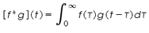
Here the symbol [f*g](t) denotes the convolution of 'f' and 'g'. Convolution is more often taken over an infinite range like,
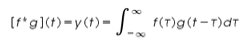
The convolution of two discrete time signals f(n) and g(n) over an infinite range can be defined as
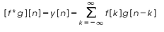
The convolution of two continuous time signals are shown in the Figure 1.
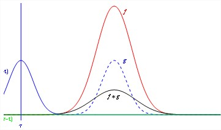
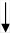
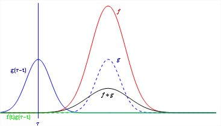
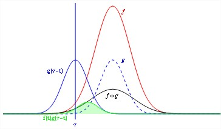

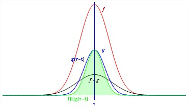
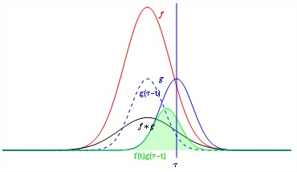
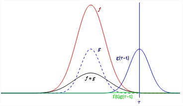
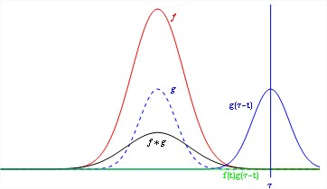
Fig.1 Convolution of two signals
There are some important properties of convolution that perform on continuous time signal which we have listed below. The commutativity, associativity, distributivity properties are given below.
| Commutativity | f(t) * g(t) = g(t) * f(t) |
| Associativity | [f(t) * g(t)] * h(t) = f(t) * [g(t) * h(t)] |
| Distributivity | f(t) * [g(t) + h(t)] = f(t) * g(t) + f(t) * h(t) |
So far in the above discussion we have discussed about the convolution of two continous time signals which is used to find the output y(t) of a system. Correlation is a mathematical operation that closely resembles convolution. Correlation is basically used to compare two signals. Correlation is the measure of the degree to which two signals are similar. The correlation of two signals is divided into two ways: (i) Cross-correlation, (ii) Auto-correlation.
Cross correlation is a measure of similarity between two waveforms as a function of time gap or delay applied to one of them. The cross correlation between a pair of continuous time signals f(t) and g(t) is given by
The index T and k are the shift parameters for continuous time and discrete time signals respectively. The order of subscripts 'fg' indicates that f(t) or f(n) are the reference sequence in continuous-time and discrete-time respectively that remains unshifted in time whereas the sequence g(t) or g(n) are shifted '' or 'k' units in time with respect to f(t) or f(n) respectively.
If we want to fix g(t) and to shift f(t), then the correlation of two sequences can be written as
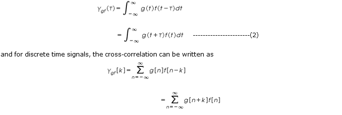
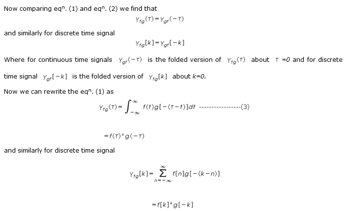and similarly for discrete time signal
From the above equation(3) we find that the correlation process is essentially the convolution of two data sequence in which one of the sequence has been reversed.
Auto correlation of a continuous time signal is the correlation of the signal with itself. The auto correlation of a continuous time signal f(t) is defined as
| 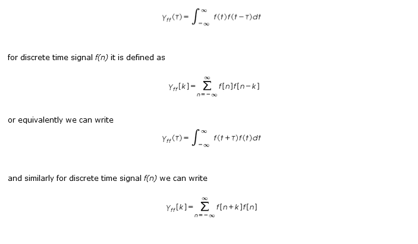 |
Relation to Signal energy and Signal power:
The auto-correlation function of a periodic signal is itself a periodic signal with a period the same as that of the original signal.
If f(t) is an energy signal, its auto-correlation is
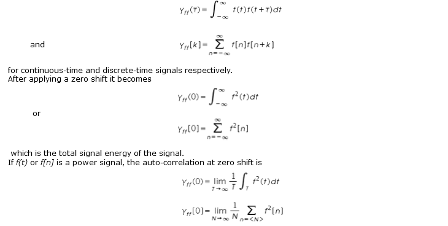
for continuous-time and discrete-time respectively which is the average signal power of the signal.
Properties of Auto-correlation:
The auto-correlation depends on the choice of the amount of shift applied. we can say from the observation that the value of the auto-correlation can never be bigger than it is at zero shift. That is,
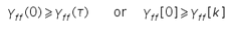
It will happen because at a zero shift, the correlation with itself is obviously as large as it can get since the shifted and unshifted versions coincide.
Another property of auto-correlation function is that all auto-correlation functions are even functions (but not all correlation functions).
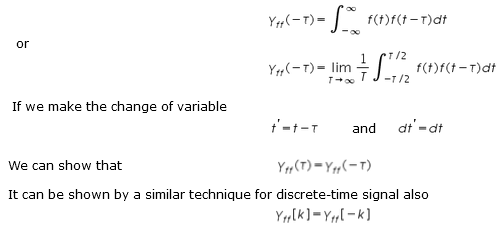be the auto-correlation function of a discrete-time energy signal f[n]. Then
Now let y[n] = f [n-n0] . Then
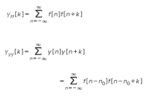
Now we can make a change of variable q = n-n0 . Then
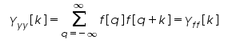
Another characteristic of auto-correlation function is that the auto-correlation of a sum of sinusoids of different frequencies is the sum of auto-correlation of the individual sinusoids. To demonstrate this idea let a continuous-time power signal f(t) be a sum of two sinusoids f1(t) and f2(t), where
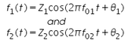
The auto-correlation of this signal is
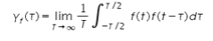
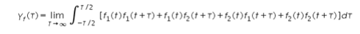
Therefore,